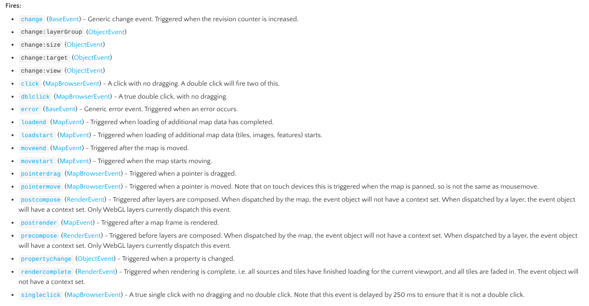

Ajouter des interactions à ma carte
2025-12-11
Sommaire
Le DOM, l’API pour interagir avec notre document HTML
Les évènements du DOM
Les évènements spécifiques à OpenLayers
Le DOM, l’API pour interagir avec notre document HTML
Qui est le Dom’ ?
Le DOM (Document Object Model en anglais) est une API qui représente et permet d’interagir ave tout document de langage de balisage basé sur HTML ou XML.
Le DOM […] permet au code exécuté dans un navigateur d’accéder à chaque nœud du document et d’interagir avec lui. Les nœuds peuvent être créés, déplacés et modifiés.
Source : MDN

Source de l’image : Wikipedia
Le DOM, l’API pour interagir avec notre document HTML
Récupérer un nœud dans mon DOM
On va voir comment accéder à nos éléments créés en HTML (nos nœuds du DOM) grâce à JavaScript. Si ce n’est pas déjà fait, ajoutez un titre dans le <body> de votre document. Assurez-vous de lui donner un identifiant unique avec id :
Si la carte se dessine par-dessus, vous devez lui dire de ne pas se positionner tout en haut du document.
Le DOM, l’API pour interagir avec notre document HTML
Récupérer un nœud dans mon DOM
Maintenant, on va utiliser le DOM (Document Object Model) pour accéder à notre titre.
L’objet document possède des attributs et des méthodes qu’on va pouvoir utiliser à notre avantage. Nous allons nous servir de la méthode getElementById() pour récupérer notre titre. Pour rappel, voici comment notre titre a été déclaré dans le HTML :
Dans votre fichier JS, tapez la ligne de code suivante et vérifiez le résultats dans la console de votre navigateur (rappel : appuyez sur F12 pour y accéder).
Le DOM, l’API pour interagir avec notre document HTML
Récupérer un nœud dans mon DOM
Il ne s’est rien passé, c’est normal ?
Oui, c’est normal. Notre application a bien récupéré notre nœud “title” mais on ne lui a pas demandé d’afficher le résultat.
Vérifiez que le résultat s’affiche bien dans votre console et passez votre souris dessus.
Le DOM, l’API pour interagir avec notre document HTML
Modifier un nœud dans mon DOM
Super, on a réussi à récupérer notre titre ! Maintenant, on en fait quoi ?
D’abord, récupérez le contenu de votre balise <div> via sa propriété innerHTML.
Le DOM, l’API pour interagir avec notre document HTML
Modifier un nœud dans mon DOM, à quoi ça sert ?
Modifier les nœuds après la création du document peut permettre d’ajouter dynamiquement du contenu. C’est comme ça qu’on va pouvoir créer une table attributaire, par exemple.
Dès que vous ne pouvez pas écrire quelque chose en HTML “dès le départ”, vous pouvez l’ajouter en JavaScript grâce au DOM !
Les évènements du DOM
Les évènements en général
Les évènements sont des actions ou des occurences qui se produisent dans le système que vous programmez et dont le système vous informe afin que vous puissiez y répondre d’une manière ou d’une autre si vous le souhaitez.
Source : MDN
Ceux du DOM
Les évènements DOM sont déclenchés pour notifier au code des « changements intéressants » qui peuvent affecter l’exécution du code. Ces chagements peuvent résulter d’interactions avec l’utilisateur, comme l’utilisation de la souris […].
Source : MDN
Les évènements du DOM
Ces évènements vont donc nous permettre de savoir quand « quelque chose » se passe et d’agir en conséquence.
Pour l’exemple, on va créer un bouton sous notre titre.
Cliquez dessus. Il ne se passe rien… normal ! On a simplement créé un nœud “bouton” mais on ne lui a pas dit quoi faire.
Les évènements du DOM
Pour qu’il se passe quelque chose, on peut utiliser plusieurs méthodes. Ici, je vous présente .addEventListener() (c’est la méthode recommandée).
Cette méthode permet de dire à notre application d’écouter (listen) des évènements (events) et d’agir en conséquence en exécutant une fonction.
const button = document.getElementById("bouton");
function direBonjour() {
console.log("Bonjour !");
}
button.addEventListener('click', direBonjour);. . . Cette fois, votre bouton devrait vous dire bonjour !
Les évènements du DOM
Pas besoin de se contenter de console.log(), on peut faire plein d’autres choses ! Cette fois, on va faire en sorte que notre bouton change la couleur de notre titre.
Pour rappel, on récupére déjà dans notre code le nœud du titre :
Maintenant, on remplace direBonjour() par une nouvelle fonction :
Et voilà ! C’est moche, mais ça fonctionne.
Les évènements du DOM
On peut aussi se servir de ce bouton pour interagir avec la carte. Dans mon code, j’ai créé une couche maCouche qui est affichée sur ma carte.
On va utiliser le bouton pour la retirer de la carte ! Pour ça, on se sert de la méthode .removeLayer() de la classe map (docs).
Attention à bien utiliser notre variable “map” APRÈS l’avoir déclarée !
Et voilà ! Vous verrez dans le TP d’autres méthodes pratiques pour afficher/masquer les couches de votre carte.
Les évènements spécifiques à OpenLayers
L’API d’OpenLayers a aussi donné à la librairie des évènements très pratiques pour pouvoir interagir avec notre carte. Vous verrez les plus importants lors des prochains TPs, mais faisons un exemple ensemble.
Accédez à la documentation de Map et regardez la section “fires”. Il s’agit de la liste des évènements qui peuvent être déclenchés par la carte.
Les évènements spécifiques à OpenLayers
Nous allons nous servir de l’évènement singleclick de la carte pour récupérer les coordonnées de notre clic sur la carte.
import { toLonLat } from 'ol/proj';
map.on('singleclick', function (evt) {
console.log(toLonLat(evt.coordinate));
});L’évènement
singleclickne se déclenche qu’au clic simple sur la carte (il existe aussi l’évènementdblclickpour le double-clic).evtnous permet de récupérer les informations sur notre évènement.On accède aux coordonnées avec la propriété
coordinatede notre évènement.On les convertit en latitude et longitude avec
toLonLat().
Les évènements spécifiques à OpenLayers
À vous de jouer ! Vous pouvez commencer à suivre le TP pour apprendre à créer un menu d’affichage des couches et afficher une table attributaire.

Formation WebCarto GeoNum 2025-2026